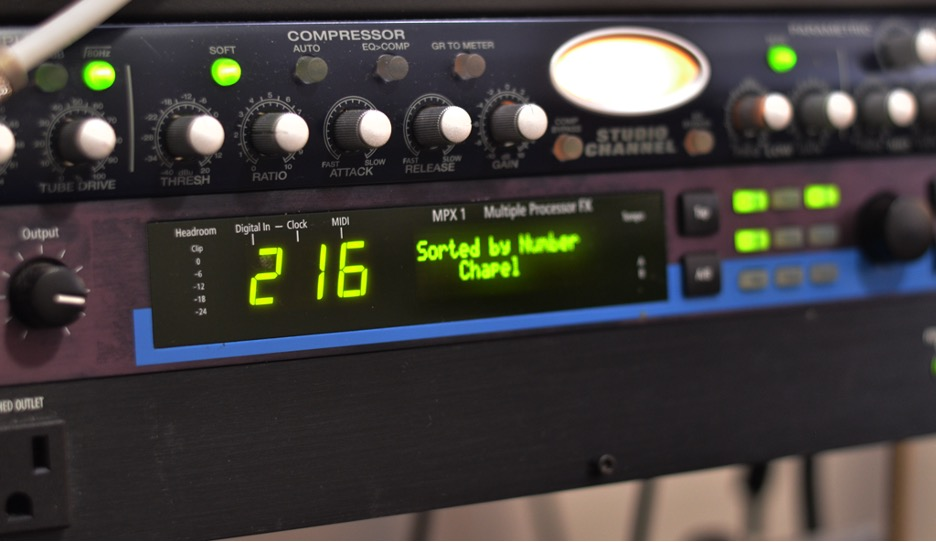
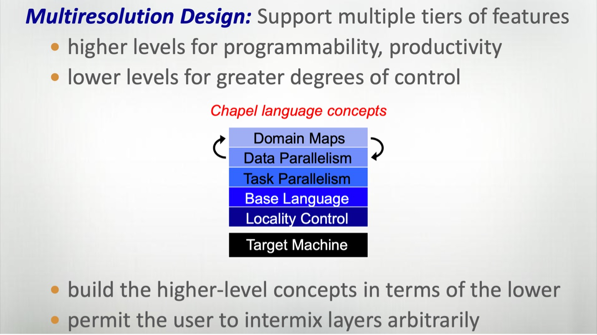
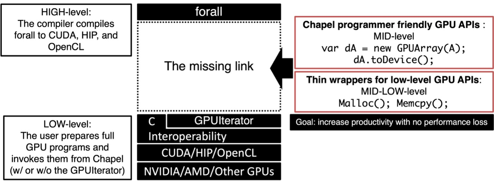
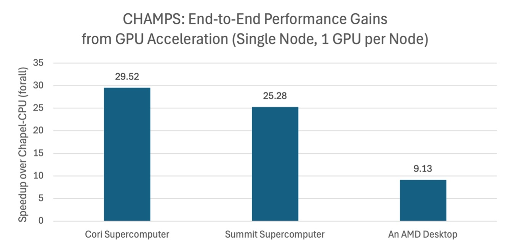

In this edition of our 7 Questions for Chapel Users series, we turn our attention to Dr. Akihiro Hayashi, a Principal Research Scientist at Georgia Tech whose work focuses on similar themes as Chapel: productivity and performance of parallel computing.
1. Who are you?
My name is Akihiro Hayashi, and I’m a Principal Research Scientist at Georgia Tech. I received my B.E., M.E., and Ph.D. from Waseda University in Japan. After completing my Ph.D. in 2012, I joined Professor Vivek Sarkar’s group at Rice University as a Postdoctoral Researcher in 2013, later advancing to Research Scientist in 2015. In 2019, I moved with the group to Georgia Tech, where I progressed from Senior Research Scientist to Principal Research Scientist. As a side note, my supervisor, Professor Sarkar, is well known for his work on the X10 language at IBM and for collaborations with the Chapel team during the DARPA HPCS program.
My research focuses on improving the productivity and performance of parallel and distributed systems, particularly through programming models, compilers, and runtime systems that hide complexity from end-users. I have extensive experience accelerating both regular and irregular applications across shared-memory and distributed-memory environments.
I may (unofficially) hold the record for the most [note:CHIUW was the acronym for our annual “Chapel Implementers and Users Workshop,” now rebranded to ChapelCon. -Editors] talks delivered (2014, 2019–2023), though I’m fully prepared to surrender the title if anyone steps forward.
On the lighter side: I’m an amateur electric guitar player, and during the COVID era, I used my home recording setup to produce my pre-recorded CHIUW talk. This unexpectedly earned me an informal award from Dr. Brad Chamberlain, who wrote on June 11th, 2021: “I think your pre-recorded video wins the ‘best audio quality’ award. :)”

The setup that earned me the ‘Best Audio Quality’ award:
preset “Chapel” and a perfectly timed “Sorted by Number” on the display.
2. What do you do? What problems are you trying to solve?
My work focuses on making high‑performance computing easier and more automatic. As modern systems combine CPUs, GPUs, and high‑speed interconnects, using them efficiently often requires specialized, low‑level expertise. My research interests lie in anything that reduces that burden.
“One of Chapel’s most powerful strengths is that many of its features are implemented in Chapel itself. This reflects Chapel's multi-resolution design philosophy.
”
In my work with Chapel, as well as related projects, I develop higher‑level programming abstractions, compiler techniques that automatically generate optimized code, and runtime systems that effectively utilize the underlying hardware. These components help programmers achieve strong performance without needing to understand every hardware detail.
The broader impact is accessibility: more scientists, engineers, and developers can leverage advanced computing to solve real‑world problems, such as computational fluid dynamics, combinatorial optimization, and large‑scale data analysis, without becoming system experts.
3. How does Chapel help you with these problems?
One of Chapel’s most powerful but often overlooked strengths is that many of its features are implemented in Chapel itself. This reflects Chapel’s multi‑resolution design philosophy: users can stay at a high level, yet still “descend” into lower‑level details without leaving the language.

The multi-resolution design of Chapel
(Chapel Tutorial, SC12, courtesy of the Chapel team)
This has been extremely valuable for my work because it lets me not only prototype higher‑level programming abstractions directly in Chapel, but also extend or customize existing constructs when I need to achieve new behaviors. Chapel gives me both the expressive freedom and the control needed to explore new ideas in parallel programming.
4. What initially drew you to Chapel?
I first encountered Chapel in 2010 while I was a Ph.D. student at Waseda University. At the time, my main research interest was automatic parallelization of sequential C programs, but I was also fascinated by the idea of languages that let programmers express parallelism directly. Chapel was the first such language I explored, and it immediately stood out.
“Chapel encourages you to begin with clean, high-level code, then gradually introduce lower-level control only where it matters.
”
Even just reading through the tutorial slides, I was intrigued by how clean and intuitive the abstractions were: forall loops, other parallel constructs, and the distributed domain model, all of which made parallel programming feel both elegant and powerful. I still remember experimenting with these features on a single-node machine while imagining how they would scale on distributed systems that I did not yet have access to.
When I joined the Habanero group in 2013, I was fortunate that these early curiosities turned into real opportunities to work on Chapel-related research. That early excitement has stayed with me ever since.
5. What are your biggest successes that Chapel has helped achieve?
Chapel’s multi-resolution philosophy has shaped some of my most successful work, particularly through the development of the GPUIterator and GPUAPI modules. Both projects started from a simple observation: Chapel encourages you to begin with clean, high-level code, then gradually introduce lower-level control only where it matters. This mindset made it natural to explore how Chapel could support GPU execution without forcing programmers to abandon the language’s elegance.

A Multi-resolution GPU Programming Model for Chapel
GPUIterator lets a
single forall loop run on CPUs, GPUs, or any combination of the two,
by automatically partitioning the iteration space and invoking
user-provided CUDA/HIP/SYCL/DPC++ kernels through a callback, all
without changing the loop body. This enables CPU-only, GPU-only, and
hybrid execution, even across distributed domains, simply by wrapping
the iteration space in GPU(...).
GPUAPI
complements this by handling the host-side complexity of GPU
programming. It provides Chapel-friendly abstractions like GPUArray
alongside thin wrappers for CUDA, HIP, and DPC++, allowing users to
choose their level of control while remaining portable across NVIDIA,
AMD, and Intel GPUs via automatic source-to-source translation.
“Chapel lets me build systems that stay clean and expressive while still delivering performance across diverse, multi-node CPU+GPU platforms.
”
Together, GPUIterator and GPUAPI enabled portable, high-performance GPU acceleration across various Chapel applications—not just in mini-apps like Stream or Black-Scholes, but also in real-world Chapel applications such as CHAMPS, ChOp, and Arkouda.
These successes highlight what I value most about Chapel: it lets me build systems that stay clean and expressive while still delivering performance across diverse, multi-node CPU+GPU platforms.
It’s worth noting that recent Chapel compilers now compile forall loops for GPUs, completing the full range of multi-resolution GPU programming in Chapel!

The GPUIterator and GPUAPI modules provide significant performance improvements, while enabling Chapel programmers to continue using Chapel for most tasks other than the kernel. However, even kernel generation can now be fully automated by recent Chapel compilers.
6. If you could improve Chapel with a finger snap, what would you do?
If I could magically add one capability to Chapel, it would be a holistic performance profiler: something that can trace a Chapel program’s behavior across all layers, from the tasking and communication runtime to distributed execution and GPU interactions.
Many parallel languages struggle with this, not just Chapel, as they often depend on different libraries at different abstraction layers. However, as applications grow larger and more heterogeneous, having an integrated view of where time and energy are truly going would make performance tuning dramatically easier. Such a tool would help both expert users pushing the limits of large systems and newcomers trying to understand why their program does not scale as they expect.
7. Anything else you’d like people to know?
One recent development that excites our group is an early indication that Chapel could be more energy-efficient than MPI or OpenSHMEM for certain classes of applications. This result comes from work by one of our Ph.D. students, Shubhendra Pal Singhal, and was made possible thanks to significant support from Dr. Brad Chamberlain and his team, as well as the ORNL team led by Dr. Oscar Hernandez. We look forward to sharing it at the CUG 2026 conference. In an era where power efficiency is becoming as important as raw performance, this is a promising direction for the language.
“Chapel's real power comes from the people behind it: the team, the contributors, and the broader community.
”
Finally, I want to echo what many others have said: Chapel’s strengths go far beyond its elegant syntax and powerful abstractions. Its real power comes from the people behind it: the team, the contributors, and the broader community. I’m genuinely grateful for everything they’ve built, and I hope more researchers and developers will give Chapel a try. It’s a language that rewards curiosity and grows with you.
We’d like to thank Akihiro for taking part in our 7 Questions for Chapel Users series! Be sure to catch his team’s work on the energy implications of aggregators in Chapel at CUG 2026. And stay tuned for future installments in this interview series!